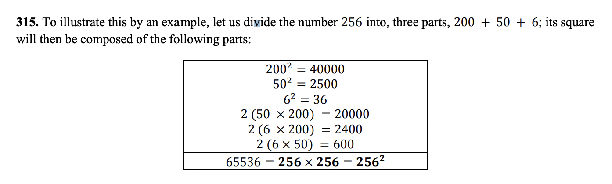
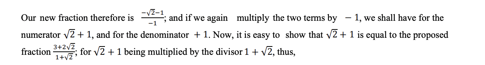
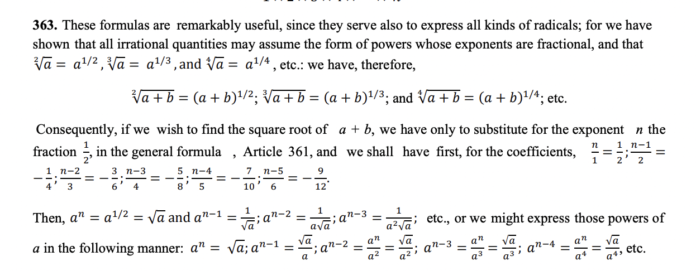

\[e^{i\pi}+1 = 0\]
12 – 3 – 5 + 2 – 1
We have only to collect separately the sum of the number s that have the sign + before them, and subtract from it the sum of those that have the sign –.
0, + 1, + 2, + 3, + 4, + 5, + 6, + 7, + 8, + 9, + 10,
natural numbers
The results which arise from the multiplication of two or more numbers are called products; and the numbers, or individual letters, are called factors.
5𝑎𝑏 by 3𝑐𝑑 == 5 × 3𝑎𝑏𝑐𝑑, or 15𝑎𝑏𝑐d
But on the other hand, the numbers 2, 3, 5, 7, 11, 13, 17, etc. cannot be represented in the same manner by factors, unless for that purpose we make use of unity, and represent 2, for instance, by 1 × 2. But the numbers which are multiplied by 1 remaining the same, it is not proper to reckon unity as a factor. All numbers, therefore, such as 2, 3, 5, 7, 11, 13, 17, etc. which cannot be represented by factors, are called simple, or prime numbers; whereas others, as 4, 6, 8, 9, 10, 12, 14, 15, 16, 18, etc. which may be represented by factors, are called composite numbers
prime and composite numbers
Hence, it is easy to find a method for analysing any number, or resolving it into its simple factors. Let there be proposed, for instance, the number 360; we shall represent it first by 2 × 180. Now 180 is equal to 2 × 90, and 90 45 15 } 𝑖𝑠 𝑡ℎ𝑒 ğ‘ ğ‘ğ‘šğ‘’ ğ‘ğ‘ { 2 × 45 3 × 15 3 × 5
This shows that prime numbers cannot be divided by other numbers; and, on the other hand, that the simple factors of compound numbers are found most conveniently, and with the greatest certainty, by seeking the simple, or prime numbers, by which those compound numbers are divisible.
The number which is to be decompounded, or divided, is called the dividend; the number of equal parts sought is called the divisor; the magnitude of one of those parts, determined by the division, is called the quotient: thus, in the above example,
12 is the dividend,
3 is the divisor, and
4 is the quotient.
long division
2, 3, 4, 5, 6, 7, 8, 9, 10, …
even numbers: the numbers di visible by it are 2
1, 3, 5, 7, 9, 11, 13, 15, 17, 19,
odd numbers: which cannot be divided by 2, without the remainder 1
2a + 1 vs 2a
We must remember al so that in all fractions the lower number is called the denominator; and that above the line the numerator.
If the numerator, on the contrary, be greater than the denominator, the value of the fracti on is greater than unity. Thus 3/2 is greater than 1, for 3/2 is equal to 2/2 together with 1/2. Now 2/2 is exactly 1; consequently 3/2 is equal to 1 + 1/2 , that is, to an integer a nd a half.
This is how pi is countinuosly expanded upon. 22/7 is the sam as 3 + 1/7
improper fractions, to distinguish them from fractions properly so called
Now, this fraction 1/4 means that if we divide 1 into 4 equal parts, this will be the value of one of those parts;
From this manner of considering fractions, the expressions numerator and denominator are derived. For, as in the preceding fraction 7 12 , the number under the line shows that 12 is the number of parts into which unity is to be divided ; and as it may be said to denote, or name, the parts, it has not improperly been called the denominator. Farther, as the upper number, namely 7, shows that, in order to have the value of the fraction, we must take, or collect, 7 of those parts, and therefore may be said to reckon or number them, it has been thought proper to call the number above the line the numerator
Fraction defintion: If we break a number one into (denominator) equal parts we have (numerator number of them )
We can never therefore arrive completely at 0, or nothing, howev er great the denominator may be ; and, consequently, as those fractions must always preserve a cer tain quantity, we may continue the series of fractions in the 78 th article without interrup tion. This circumstance has in troduced the expression that the denominator must be infinite, or infinitely great, in order that the fraction may be reduced to 0, or to nothing; hence the word infinite in reality sig nifies here that we can never arrive at the end of the series of the above - mentioned fraction
Scaling a fraction a(1/2) still one - half
In order therefore to reduce a given fraction to its least terms, it is required to find a number, by which both the numerator and denominator may be divided. Such a number is called a common divisor; ... no other common divisor can be found, this shows that the fraction is already in its simplest form.
We will conclude the present, however, by remarking that all whole numbers may also be represented by fractions.
To this part of the subject belongs also the question, Of two proposed fractions which is the greater or the less? For, to resolve this, we have only to reduce the two fractions to the same denominator. Let us take, for example, the two fractions 2/3 and 5/7 ; when reduced to the same denominator, the first becomes 14/21 , and the second 15/21 , where it is evident that the second, or 5/7 , is the greater, and exceeds the former by 1/21 .
If you don't want to multiply to find the common denominator you can alway reduce then multiply. Also, finding the common denominator is a form of normalizing.
stopped 39
This inquiry is necessary, before we proc eed to the multiplication of fractions by fractions. It is evident, if we have to divide the fraction 2/3 by 2, that the result must be 1 3 ; and that the quotient of 6/7 divided by 3 is 2/7 . The rule therefore is, to divide the numerator by the integer without changing the denominator. Thus:
\[\frac{6}{7 *3} = \frac{2}{7}\]
Another way to divide fractions I was not familiar with. We can get rid of the 6 by dividing by 3. Instead of multiplying the denominator through and then reducing.
If it were required, for example, to divide 3/4 by 2, we should change the fraction into 6/8 , and then dividing the numerator by 2, we should immediately have 3/8 for the quotient sought.
dividing fractions
Hence the following rule : Multiply the numerator of the dividend by the denomina tor of the divisor, and the denominator of the dividend by the numerator of the divisor; then the first product will be the numerator of the quotient, and the second will be its denominator
When the divisor is less than one the quotient is larger than the dividend
Every number divided by itself is 1. A fraction divided by itself is 1
We have still to explain an expression which is frequently used. It may be asked, for example, what is the half of 3/4? This means that we must multiply 3/4 by 1/2
What is half of x? Then multiply x by 1/2.
The product of a number, when multiplied by itself, is called a square; and, for this reason, the number, considered in relation to such a product, is called a square root. For example, when we multiply 12 by 12, the product 144 is a square, of which the root is 12.
The origin of this term is borrowed from geometry, which teaches us that the contents of a square are found by multiplying its side by itself.
Here it will be readily perceived that the series of square numbers thus arranged has a singular property; namely, that if each of them be subtracted from that which immediately follows, the remainders always increase by 2, and form this series:
3, 5, 7, 9, 11, 13, 15, 17, 19, 21, etc.
I did not know that.
When the square of a mixed number, or a number composed of an integer and a fraction, is required, we have only to reduce it to a single fraction, and then take the square of that fraction. Let it be required, for example, to find the square of 2 1/2 ; we first express this mixed number by 5/2 ,
Thus, when the root is composed of two or more factors, we multiply their squares together ; and, reciprocally, if a square be composed of two, or more factors, of which each is a square, we have only to multiply together the roots of those squares, to obtain the complete root of the square proposed. Thus, 2304 is equal to 4 × 16 × 36, the square root of which is 2 × 4 × 6, or 48; and 48 is found to b e the true square root of 2304 because 48 × 48 gives 2304.
This is intresting. Find the factors then find the roots.
There is therefore a sort of numbers, which cannot be assigned by fractions, but which are nevertheless determinate quantities; as, for instance, the square root of 12: and we call this new species of numbers, irrational numbers. They occur whenever we endeavour to find the square root of a number which is not a square; thus, 2 not being a perfect square, the square root of 2, or the number which multiplied by itself would produce 2, is an irrational quantity. These numbers are also called surd quantities or incommensurables.
Irrational defintion incommensurables
√2 by √2 must necessarily produce 2
In division, if it were required, for example, to divide √ğ‘ by √ğ‘, we obtain √ ğ‘ ğ‘ ; and, in this instance, the irrationality may vanish in the quotient. Thus, h aving to divide √18 by √8, the quotient is √ 18 / 8 , which is reduced to √ 9 / 4 , and consequently to 3/ 2 because 9/ 4 is the square of 3/ 2
Didn't know about this
. It is easy also to multiply irrational numbers by ordinary numbers; thus, for example, 2 multiplied by √5 makes 2√5; and 3 times √2 makes 3√2. In the second example, h owever, as 3 is equal to √9, we may also express 3 times √2 by √9 multiplied by √2, or by √18;
also 2√ğ‘ is the same as √4ğ‘, and 3√ğ‘ the same as √9ğ‘; and, in general, b√ğ‘ has the same value as the square root of ğ‘ğ‘ğ‘, or √𝑏𝑏𝑎 : we can infer reciprocally that when the number which is preceded by the radical sign contains a square, we may take the root of that square, and put it before the sign,as we should do in writing b√ğ‘ instead of √𝑏𝑏𝑎, After this, the following reductions will be easily understood
This was not explained well in school. Thankful for this!
We may observe, lastly, that in order to distinguish the irrational numbers, we call all other numbers, both integral and fractional, rational numbers; so that, whenever we speak of rational numbers, we understand integers, or fractions.
When it is required, therefore, to extract the root of a negative number, a great difficulty arises; since there is no assignable number, the square of which would be a negative quantity. Suppose, for example, that we wished to extract the root of − 4; we here require such a number as, when multiplied by itself, would produce −4: now, this number is neither + 2 nor − 2 because the square both of + 2 and of − 2, is + 4, and not − 4.
All such expressions, as √−1, √−2, √−3, √−4, etc. are consequently impossible, or imaginary numbers, since they represent roots of negative quantities; and of such numbers we may truly assert that they are neither nothing, nor greater than nothing, no r less than n othing; which necessarily constitutes them imaginary, or impossible
imaginary numbers
. Now, as − ğ‘ is equal to + ğ‘ multiplied by − 1, and as the square root of a product is found by multiplying together the roots of its factors, it follows that the root of ğ‘ times − 1, or √−𝑎, is equal to √ğ‘ multiplied by √−1; but √ğ‘ is a possible or real number, consequently the whole impossibility of an imaginar y quantity may � Leonard Euler 51 be always reduced to √−1; for this reason, √−4 is equal to √4 multiplied by √−1, or equal to 2 √−1 because √4 is equal to 2; likewise √−9 is reduced to √9 × √−1, or 3√−1; and √−16 is equal to 4√−1
the crux of imaginary numbers is √−1
When a number has been multiplied twice by itself, or, which is the same thing, when the square of a number has been multiplied once more by that number, we obtain a product which is called a cube or a cubic number. Thus, the cube of ğ‘ is ğ‘ğ‘ğ‘, since it is the product obtained by multiplying ğ‘ by itself, or by ğ‘, and that square ğ‘ğ‘ again by ğ‘.
The cubes of the natural numbers, therefore, succeed each other in the following order[14]:
Numbers 1 2 3 4 5 6 7 8 9 10
Cubes 1 8 27 64 125 216 343 512 729 1000
If we consider the differences of those cubes, as we did of the squares, by subtracting each cube from that which comes after it, we obtain the following series of numbers:
7, 19, 37, 61, 91, 127, 169, 217, 271.
Where we do not at first observe any regularity in them ; but if we take the respective differences of these numbers, we find the following series:
12, 18, 24, 30, 36, 42, 48, 54, 60;
in which the terms, it is evident, increase always by 6.
When we took the differnce of the series on the squared number (derivative/ velocity) we noticed a pattern. Now on cube we have to take the second difference (acceleration) and we notice a pattern. If I apply the same to the degrees count in increase in Going back to harmonic series
Same as squares no imginary nums
The product which we obtain by multiplying a number once, or several times by itself, is called a power. Thus, a square which arises from the multiplication of a number by itself, and a cube which we obtain by multiplying a number twice by itself, are powers. We say also, in the former case, that the number is raised to the second degree, or to the second power; and in the latter, that the number is raised to the third degree, or to the third power
2^2 is 2 * 2, 2 ^ 5 is 2 * 2 * 2 * 2 * 2. I don't know if I was looking at it this way
. In a word, the different powers of ğ‘ will be represented by ğ‘, ğ‘ 2 , ğ‘ 3 , ğ‘ 4 , ğ‘ 5 , ğ‘ 6 , ğ‘ 7 , ğ‘ 8 , ğ‘ 9 , ğ‘ 10 , etc. Hence we see that in this manner we might very properly have written ğ‘ 1 instead of a for the first term, to show the order of the series mo re clearly. In fact, ğ‘ 1 is no more than ğ‘, as this unit shows that the letter ğ‘ is to be written only once. Such a series of powers is called also a geometrical progression because each term is greater by one-time, or term, than the preceding.
Reducing the power
As in this series of powers each term is found by multiplying the preceding term by ğ‘, which increases the exponent by 1; so when any term is given, we may also find the preceding term, if we divide by ğ‘, because this diminishes the exponent by 1. This shows that the term which precedes the first term ğ‘ ^1 must necessarily be ğ‘/ğ‘ ,
even when ğ‘ is nothing; that is to say, ğ‘ 0 is equal to 1.
Addition of powers a^5 + 3a^5 = 4a^5
Multiplication of powers a^5 * a^4 = a^9
product of ğ‘ 𝑛 by ğ‘ 3 is ğ‘ 𝑛+3
From these considerations we may easily determine the highest powers. To find, for instance, the twenty - fourth power of 2, I multiply the twelfth power by the twelfth powe r because 2 24 is equal to 2 12 × 2 12. Now, we have already seen ( see the Table in Article 170 ) that 2 12 is 4096; I say therefore that the number 16777216, or the product of 4096 by 4096, expresses the power required, namely, 2 2
I've never thought to experess powers this way. Maybe this helps with 2^n when dealing with programming.
From what has been sai d, it is easy to understand the method of finding the powers of powers, this being done by multiplication. When we seek, for example, the square, or the second power of ğ‘ 3 , we find ğ‘ 6 ; and in the same manner we find ğ‘ 12 for the third power or the cube, of ğ‘ 4 . To obtain the square of a power, we h ave only to double its exponent; for its cube, we must triple the exponent; and so on. Thus, the square of ğ‘ 𝑛 is ğ‘ 2𝑛 ; the cube of ğ‘ 𝑛 is ğ‘ 3𝑛 ; the seventh power of ğ‘ 𝑛 is ğ‘ 7𝑛 , etc.
Powers of powers
Thus, the square root of ğ‘ 2 is ğ‘ 1 or ğ‘; that of ğ‘ 4 is ğ‘ 2 ; that of ğ‘ 6 is ğ‘ 3 ; and so on: and, as this is general, the square root of ğ‘ 3 must necessarily be ğ‘ 3/2 , and that of ğ‘ 5 must be ğ‘ 5/2 ; consequently, we shall in the same manner have ğ‘ 1/2 for the square root of ğ‘ 1 . Whence we see that ğ‘ 1/2 is equal to √ğ‘; which new method of representing the square root demands particular attention.
the third, or cube root of ğ‘, or ğ‘ 1 , must be ğ‘ 1/3 : whence also, it appears, that ğ‘ 1/3 is the same as √ğ‘ 3 .
. If we have, for example, ğ‘ 4/3 this means that we must first take the fourth power of a, and then extract its cube, or third root; so that ğ‘ 4/3 is the same as the common expression √ğ‘ 4
I never interpreted it like this!
. When the fraction which represents the exponent exceeds unity, we may express the value of the given quantity in another way: for instance , suppose it to be ğ‘ 5/2 ; this quantity is equivalent to ğ‘ 2 1 2, which is the product of ğ‘ 2 by ğ‘ 1/2 : now ğ‘ 1/2 being equal to √ğ‘, it is evident that ğ‘ 5/2 is equal to ğ‘ 2√ğ‘;
We shall observe, in the last place, that each root may be represented in a variety of ways; for√ğ‘ being the same as ğ‘ 1/2 , and 1 2 being transformable into t he fractions, 2/ 4 , 3/ 6 , 4/ 8 , 5/ 10 , 6/ 12 , etc. it is evident that √ğ‘ is equal to 4√ğ‘^2 2 or to 6√ğ‘^3 , or to 4√ğ‘^8 , and so on. In the same manner, 3√ğ‘ , which is equal to ğ‘ 1/3 , will be equal to 6√ğ‘^2 , or to 9√ğ‘^3 or to 12√ğ‘^4 . Hence also we see that the number a, or ğ‘ 1 might be represented by the following radical expressions:
We have seen that multiplication arises from addition; that is to say, from the addition of several equal quantities: and if we now proceed farther, we shall perceive that, from the multiplication of several equal quantities together, powers are derived; which powers are represented in a general manner by the expression ğ‘^ ğ‘
never thougth of it like this.
We see then that the value of the root ğ‘ being once established, the logarithm of any number, ğ‘, is nothing more than the exponent of that power of ğ‘, which is equal to ğ‘: so that ğ‘ being = ğ‘ ğ‘ , ğ‘ is the logarithm of the power ğ‘ ğ‘ . If, for the present, we suppose ğ‘ = 1, we have 1 for the logarithm of ğ‘ 1 , and consequently 𝑙𝑜𝑔. ğ‘ = 1; but if we suppose ğ‘ = 2, we have 2 for the logarithm of ğ‘ 2 ; that is to say, 𝑙𝑜𝑔. ğ‘ 2 = 2, and we may, in the same manner, obtain 𝑙𝑜𝑔. ğ‘ 3 = 3, 𝑙𝑜𝑔. ğ‘ 4 = 4, 𝑙𝑜𝑔. ğ‘ 5 = 5, and so on.
so entering in the base and the power into log returns the power.
If we make ğ‘ = 0, it is evident that 0 will be the logarithm of ğ‘ 0 ; but ğ‘ 0 = 1; consequently 𝑙𝑜𝑔. 1 = 0, whatever be the value of the root ğ‘.
ğ‘ = 𝑙𝑜𝑔. ğ‘; and generally, ğ‘ 𝐿.ğ‘ = ğ‘ [or, ğ‘ 𝑙𝑜𝑔.ğ‘ = ğ‘].
a^b = c therefore, log(a^b) = b and log(c) = b and log(c^2) = 2 log(c)
mutliplication and division of logs
A new log identity
log. ğ‘^ 𝑛 = 𝑛 𝑙𝑜𝑔. ğ‘,
Why Log tables are useful. I did not know this
When log(c) is in the exponent it because it's equal to b
I learned here how to estimate a power. In the course of this endeavour I thought of doing a binary search between the ranges of 1/3 to 1/4 to find 10^x = 2. It would be much more effienct to find our desired value. Continuing, Doex 10^(x) = 2 where x = 2/7 actually equal 2? To solve, times both sides by ^7/1. This raises 10^2/7 to the power of 7 getting rid of 7 in the denominator. So, 100 = 2^7 -> 100 = 128 therefore, 2/7 is less than the desired value because the left side of the equation is less than the right. If the otherside of the equation was greater then we would have overshot and the next value we would try would be less than 2/7.
237. First, as 𝑙𝑜𝑔. 2 = 𝑥, and 𝑙𝑜𝑔. 10 = 1, we shall have 𝑙𝑜𝑔. 20 = 𝑥 + 1, 𝑙𝑜𝑔. 200 = 𝑥 + 2, 𝑙𝑜𝑔. 2000 = 𝑥 + 3, 𝑙𝑜𝑔. 20000 = 𝑥 + 4, 𝑙𝑜𝑔. 200000 = 𝑥 + 5, 𝑙𝑜𝑔. 2000000 = 𝑥 + 6, etc.
238. Farther, as 𝑙𝑜𝑔. ğ‘ 2 = 2 𝑙𝑜𝑔. c, and 𝑙𝑜𝑔. ğ‘ 3 = 3 𝑙𝑜𝑔. c, and 𝑙𝑜𝑔. ğ‘ 4 = 4 𝑙𝑜𝑔. c, etc. we have 𝑙𝑜𝑔. 4 = 2𝑥; 𝑙𝑜𝑔. 8 = 3𝑥; 𝑙𝑜𝑔. 16 = 4𝑥; 𝑙𝑜𝑔. 32 = 5𝑥; 𝑙𝑜𝑔. 64 = 6𝑥, etc. Hence we find also that
𝑙𝑜𝑔. 40 = 2𝑥 + 1 || 𝑙𝑜𝑔. 400 = 2𝑥 + 2
𝑙𝑜𝑔. 4000 = 2𝑥 + 3 || 𝑙𝑜𝑔. 40000 = 2𝑥 + 4, 𝑒𝑡𝑐.
𝑙𝑜𝑔. 80 = 3𝑥 + 1 || 𝑙𝑜𝑔. 800 = 3𝑥 + 2
𝑙𝑜𝑔. 8000 = 3𝑥 + 3 || 𝑙𝑜𝑔. 80000 = 3𝑥 + 4, 𝑒𝑡𝑐.
𝑙𝑜𝑔. 160 = 4𝑥 + 1 || 𝑙𝑜𝑔. 1600 = 4𝑥
𝑙𝑜𝑔. 16000 = 4𝑥 + 3 || 𝑙𝑜𝑔. 160000 = 4𝑥 + 4, 𝑒𝑡𝑐.
This is intresting. I did not know about this identity
So here we are trying to find log5(x) then we add it, say n, to whatever y is of the resultant of 10^y = x. So the answer is n(z) + y where z is log(5)
𝑙𝑜𝑔. 6 = 𝑥 + 𝑦, 𝑙𝑜𝑔. 12 = 2𝑥 + 𝑦, 𝑙𝑜𝑔. 18 = 𝑥 + 2𝑦, 𝑙𝑜𝑔. 15 = 𝑙𝑜𝑔. 3 + 𝑙𝑜𝑔. 5 = 𝑦 + 1 – x
The trick here is to split up the value given to the log into componets factors of (3 * 2) so that we have logx represeinting log2 and y as log3
We have already seen that all numbers arise from the multiplication of prime numbers. If therefore we only knew the logarithms of all the prime numbers, w e could find the logarithms of all the other numbers by simple additions. The number 210, for example, being formed by the factors 2, 3, 5, 7, its logarithm will be 𝑙𝑜𝑔. 2 + 𝑙𝑜𝑔. 3 + 𝑙𝑜𝑔. 5 + 𝑙𝑜𝑔. 7. In the same manner, since 360 = 2 × 2 × 2 × 3 × 3 × 5 = 2 3 × 3 2 × 5, we have 𝑙𝑜𝑔. 360 = 3 𝑙𝑜𝑔. 2 + 2 𝑙𝑜𝑔. 3 + 𝑙𝑜𝑔. 5. It is evident, therefore, that by means of the logarithms of the prime numbers, we may determine those of all others; and that we must first apply to the determination of the former, if we would construct Tables of Logarithms.
This is very intresting! If we break up the number into it's prime factors we can figure out the logs!

How decimals came to be. I completly forgot how each sessional positon represents the number over a power of 10.
it will be also easily perceived that the logarithms of numbers, between 100 and 1000, are expressed by the integer 2 with a decimal fraction: those of numbers between 1000 and 10000, by 3 plus a decimal fraction: those of numbers between 10000 and 100000, by 4 integers plus a decimal fraction, and so on. Thus, the 𝑙𝑜𝑔. 800, for example, is 2.9030900; that of 2290 is 3.3598355, etc.
logs between 1 to 10 represented as a fraction
So reciprocally, we know at the first sight of the in teger part of a logarithm, how many figures compose the number answering to that logarithm; since the number of those figures always exceed the integer part of the logarithm by unity. Suppose, for example, the numb er answering to the logarithm 6.4771213 were required, we know immediately that that number must have seven figures, and be greater than 1000000. And in fact this number is 3000000; for 𝑙𝑜𝑔. 3000000 = 𝑙𝑜𝑔. 3 + 𝑙𝑜𝑔. 1000000. Now 𝑙𝑜𝑔. 3 = 0.4771213, and 𝑙𝑜𝑔. 1000000 = 6, and the sum of those two logarithms is 6.477𝑙213.
. The principal consideration therefore with respect to each logarithm is the decimal fraction which follows the point, and even that, when once known, serves for several numbers. In order to prove this, let us con sider the logarithm of the number 365; its first part is undoubtedly 2; with respect to the other, or the decimal fraction, let us at present represent it by the letter 𝑥; we shall have 𝑙𝑜𝑔. 365 = 2 + 𝑥; then multiplying continually by 10, we shall have 𝑙𝑜𝑔. 3650 = 3 + 𝑥; 𝑙𝑜𝑔. 36500 = 4 + 𝑥; 𝑙𝑜𝑔. 365000 = 5 + 𝑥, and so on. But we can also go back, and continually divide by 10; which will give us 𝑙𝑜𝑔. 36.5 = 1 + 𝑥; 𝑙𝑜𝑔. 3.65 = 0 + 𝑥; 𝑙𝑜𝑔. 0.365 = – 1 + 𝑥; 𝑙𝑜𝑔. 0.0365 = – 2 + 𝑥; 𝑙𝑜𝑔. 0.00365 = – 3 + 𝑥, and so on.
Dividing by ten leads the opposite way into the negative. What refreshing thinking. Didn't see it comming.
Logarithms ver intresting section
If it were required therefore to add the expression 𑑠– 𑒠– ğ‘“ to ğ‘ – ğ‘ + ğ‘, we should express the sum thus, ğ‘ − ğ‘ + ğ‘ + 𑑠− 𑒠− ğ‘“ remarking, however, that it is of no consequence in what order we write these terms; for their places may be changed at pleasure, provided their signs be preserved; so that this sum might have been written thus; ğ‘ − 𝑒 + ğ‘ − ğ‘“ + 𑑠− b
Whenever two or more terms, therefore, are entirely the same with regard to letters, their sum may be abridged; but those cases must not be confounded with such as these, 2ğ‘ 2 + 3ğ‘, or 2ğ‘ 3 − ğ‘ 4 , which admit of no abridgment.
where it was required to subtract the expression 𑑠− 𝑒 + ğ‘“ from ğ‘ − ğ‘ + ğ‘, we obtain ğ‘ − ğ‘ + ğ‘ − 𝑑 + 𑒠− ğ‘“.
An example in numbers will render this still more clear; for if we subtract 6 − 2 + 4 from 9 − 3 + 2, we evidently obtain
9 − 3 + 2 − 6 + 2 − 4 = 0
for 9 − 3 + 2 = 8; also, 6 − 2 + 4 = 8; and 8 − 8 = 0.
Now, in order to show how a quantity, 𝐴, is to be multipli ed by a compound quantity, 𑑠− 𝑒; let us first consider an example in numbers, supposing that 𝐴 is to be multiplied by 7 − 3. Here it is evident that we are required to take the quadruple of 𝐴: for if we first take a seven times, it will then be necessary to subtract 3𝐴 from that product.
In general, therefore, if it be required to multiply 𝐴 by 𑑠− 𝑒, we multiply the quantity 𝐴 first by 𝑑, and then by 𝑒, and subtract this last product from the first: whence results 𝑑𝐴 − 𝑒𝐴.
If we now suppose 𝐴 = ğ‘ − ğ‘, and that this is the quantity to be multiplied b y 𑑠− 𝑒; we shall have 𝑑𝐴 = ğ‘𑑠− 𝑐𝑑, 𝑒𝐴 = ğ‘𑒠− ğ‘ğ‘’ whence 𝑑𝐴 − 𝑒𝐴 = ğ‘𑑠− ğ‘𑑠− ğ‘ğ‘’ + ğ‘ğ‘’ is the product required.
Which shows that we must multiply each term of the upper expression by each term of the lower, and that, with regard to the signs, we must strictl y observe the rule before given ; a rule which this circumstance would completely confirm, if it admitted of the least doubt.
I knew this thankfully.
The sum of two numbers, multiplied by their difference, is equal to the difference of the squares of those numbers, which may be expressed as:
(ğ‘ + ğ‘) × (ğ‘ − ğ‘) = ğ‘^ 2 − ğ‘^ 2
This must be a repeating pattern for him to mention this. Much like the series subtraction with squared and cubes
And from this another theorem may be de rived; namely, The difference of two square numbers is always a product, and divisible both by the sum and by the difference of the roots of those two squares; consequently, the difference of two squares can never be a prime number
The difference of two squares can never be a prime. Take note.
I was intmidated when approaching this topic but after gallvanizing and charging forth I don't find this subject scary. The logic was not explained to me in this way. I'm suprised such a devotedly religious man could use such logic. Am I wrong? They are more foresightful. Well, there are others just as foresightful that believe contrary. The debate goes on.
When it is required to divide a compound quantity by a simple one, we divide each term separatel y, as in the following examples:
(6𝑎 − 8𝑏 + 4𝑐) ÷ 2 = 3𝑎 − 4𝑏 + 2�
Division of components explained beautifully
288. This operation will be considerably facilitated by choosing one of the terms of the divisor, which contains the highest power, to be written first ; and then, in arranging the terms of the dividend, begin with the highest powers of that first term of the divisor, continuing it according to the powers of that letter. This term in the preceding example was ğ‘. The following examples will render the process more perspicuous.
infinite division of 1/1-x explained
We plug in a value for a say 1/2. When we can take the first three terms of the series the summation will approximate the resultant 1/(1 - 1/2) = y. If we take the summation of the seires to infinite we will get the resultant.
This is intresting!
he method, which we have here explained, serves to resolve, generally, all fractions into infinite series; which is often found to be of the greatest utility. It is also remarkable that an infinite series, though it never ceases, may have a determinate value. It should likewise be observed that, from this branch of mathematics, inventions of the utmost importance have been derived; on which account the subject deserves to be studied with the greatest attention.
308. We may easily find, by means of this formula, the squares of numbers, however great, if we divide them into two parts. Thus, for example, the square of 57, if we consider that this number is the same as 50 + 7, will be found = 2500 + 700 + 49 = 3249. Hence it is evident that the square of ğ‘ + 1 will be ğ‘ 2 + 2ğ‘ + 1: for since the square of ğ‘ is ğ‘ 2 , we find the square of ğ‘ + 1 by adding to that square 2ğ‘ + 1; and it must be observed that this 2ğ‘ + 1 is the sum of the two roots ğ‘, and ğ‘ + 1.
Wow I didn't know this at all! Really neat way of looking at things. It' litearlly a^2 + 2ab * b^2. Facinating
now we do 2 times the produvt of each term
319. Having therefore found the first term of the root, that is to say, ğ‘, we must consider the rest of the square, namely, 2ğ‘ğ‘ + ğ‘ 2 , to see if we can derive from it the second part of the root, which is ğ‘. Now, this remainder, 2ğ‘ğ‘ + ğ‘ 2 , may be represen ted by the product, (2ğ‘ + ğ‘)ğ‘; wherefore the remainder having two factors, (2ğ‘ + ğ‘), and ğ‘, it is evident that we shall find the latter, ğ‘, which is the second part of the root, by dividing the remainder, 2ğ‘ğ‘ + ğ‘ 2 , by 2ğ‘ + ğ‘.
320. So that the quotient, arising from the division of the above remainder by 2ğ‘ + ğ‘, is the second term of the root required; and in this division we observe that 2ğ‘ is the double of the first term ğ‘, which is already determined: so that although the second term is ye t unknown, and it is necessary, for the present, to leave its place empty, we may nevertheless attempt the division, since in it we attend only to the first term 2ğ‘; but as soon as the quotient is found, which in the present case is ğ‘, we must put it in the vacant place, and thus render the division complete
I still do not understand 324
When it is required to add together two or more irrational quantities, this is to be done, according to the method before laid down, by writing all the terms in succession, each with its proper sign: and, with regard to abbreviations, we must remark that, instead of √ğ‘ + √ğ‘, for example, we may write 2√ğ‘; and that √ğ‘ − √ğ‘ = 0 because these two terms destroy one another. Thus, the quantities 3 + √2 and 1 + √2, added together, make 4 + 2√2, or 4 + √8; the sum of 5 + √3 and 4 − √3, is 9; and that of 2√3 + 3√2 and √3 − √2, is 3√3 + 2√2.
multiplication of surds turn the denominator to a^2 + b^2
To find the cube of ğ‘ + ğ‘, we have only to multiply its square, ğ‘ 2 + 2ğ‘ğ‘ + ğ‘ 2 , again by ğ‘ + ğ‘, thus,
and the cube will be 𝒂^ 👠+ ğŸ‘ğ’‚^ 𝟐𝒃 + 𝟑𝒂𝒃 ^𝟐 + 𝒃 𝟑
We see therefore that it contains the cubes of the two parts of the root, and, beside that, 3ğ‘ 2ğ‘ + 3ğ‘ğ‘ 2 ; which quantity is equal to (3ğ‘ğ‘) × (ğ‘ + ğ‘); that is, the triple product of the two parts, ğ‘ and ğ‘, multiplied by their sum.
334. So that whenever a root is composed of two terms, it is easy to find its cube by this rule: for example, the number 5 = 3 + 2; its cube is therefore 27 + 8 + (18 × 5) = 125. And if 7 + 3 = 10 be the root; then the cube will be 343 + 27 + (63 × 10) = 1000. To find the cube of 36, let us suppose the root 36 = 30 + 6, and we have for the cube required, 27000 + 216 + (540 × 36) = 46656.
extracting the cube is the same process as extracting the square.
The coefienct display graphical normal distribution.
Each row is equal to 2^n! Amazing pattern recognition
The coeficints can be found by multiplying the fractions.
Transposition = combination of letters. If the letters are equal you divide by the uniquie num. 6!/3! * 2! meaning aaabb find unique combinations
finding the coefficient. (a + b)^7 a^7 7!/7! = 1, a6b 7!/6! = 7 a5b2 7!/(5! * 2!) = 21
we understand the numbers are just the formal statement of the latter derivation.
The statement ğ‘^ 𝑛−1 = (1/ √ğ‘) ; ğ‘^ 𝑛−2 = (1/ 𝑎√𝑎) ; ğ‘^ 𝑛−3 =( 1/ ğ‘^2√ğ‘) ; makes use of improper fractions. The exponent of a^((1/2) - 3) = - 5/2 so a can rewritten (1/√ğ‘^5 ) or the exponent can be written as a mixed fraction 2(1/2) which then allows the sepration of powers to a^2 (√a)
Same as previous. Showed sum cancellation.
geometrical ratio: how many times the one is greater than the other
arithmetical ratio: how much one of the quantities is greater than the other
arithmetical ratio As the difference between two numbers is found by subtracti ng the less from the greater, nothing can be easier than resolving the question how much one is greater than the other:
arithmetical ratio deals with subtraction
Thus, when ğ‘ − ğ‘ = 𝑑, and ğ‘ − ğ‘ = 𝑑, so that the difference is the same between the numbers ğ‘ and ğ‘, as between the numbers ğ‘ and ğ‘, we say that these four numbers form an arithmetical proportion;
. When we have an arithmetical proportion, as ğ‘ − ğ‘ = ğ‘ − ğ‘, we may make the second and third terms change places, writing ğ‘ − ğ‘ = ğ‘ − ğ‘:
. But the most interesting property of every arithmetical proportion is this, that the sum of the second and third term is always equal to the sum of the first and fourth. This property, which we must particularly consider, is expressed also b y saying that the sum of the means is equal to the sum of the extremes. Thus, since 12 − 7 = 9 − 4, we have 7 + 9 = 12 + 4; the sum being in both cases 16.
When, in an arithmetical proportion, the second term is equal to the third, we have only three numbers; the property of which is this, that the first, minus the second, is equal to the second, minus the third; or that the difference between the first and second number is equal to the difference between the second and third. The three numbers 19, 15, 11, are of this kind, since 19 − 15 = 15 − 11. 398. Three such numbers are said to form a continued arithmetical proportion, which is sometimes written thus, 19 ∶ 15 ∶ 11. Such proportions are also called arithmetical progressions, particularly if a greater number of terms follow each other according to the same law.
arithmetical progression
By following the same method, we may pursue the arithmetical progression as far as we please; we have only to find the fourth term by means of the second and third, in the same manner as we determined the third by means of the first and second, and so on. Let ğ‘ be the first term, and ğ‘ the second, the third will be 2ğ‘ − ğ‘, the fourth 4ğ‘ − 2ğ‘ − ğ‘ = 3ğ‘ − 2ğ‘, the fifth 6ğ‘ − 4ğ‘ − 2ğ‘ + ğ‘ = 4ğ‘ − 3ğ‘, the sixth 8ğ‘ − 6ğ‘ − 3ğ‘ + 2ğ‘ = 5ğ‘ − 4ğ‘, the seventh 10ğ‘ − 8ğ‘ − 4ğ‘ + 3ğ‘ = 6ğ‘ − 5ğ‘, etc.
𝑧−𝑎/ 𝑑 = 𑛠− 1; From the first and last term find the difference
sum of series 𝑛(ğ‘ + 𝑧)/2
. Suppose a person buys a horse, on condition that for the first nail [in the horseshoe] he shall pay 5 pence, for the second 8 pence, for the third 11 pence, and so on, always increasing 3 pence more for each nail, the whole number of which is 32; required the purchase of the horse? In this question it is required to find the sum of an arithmetical progression, the first term of which is 5, the difference 3, and the number of terms 32; we must therefore begin by determining the last term; which is found by the rule, in Articles 406 and 411, to be 5 + (31 × 3) = 98; after which the sum required is easily found to be 103×32 2 = 103 × 16; whence we conclude that the horse costs 1648 pence, or 6𝑙. 17ğ‘ . 4𝑑. [or 6 pounds, 17 shillings, 4 pennies].
𝑛𝑎 ± 𝑛(𝑛−1)𝑑 2 another identity for seires sum
(-3)^4 = 3 * 3 * 3 * 3 = 81
-3^4 = 3 * 3 * 3 * 3 = -81
3^-4 = 1 /(3 * 3 * 3 * 3) = 1/81
(5 ^ 23)/(5 ^ 21) -> 23 - 21 = 2 -> 5^2 = 25
(2/3)^-2 = 1/(4/9) = 9/4
16^(-3/4) = 1/ 4√16^3 = 1/8
simplify √200 - √32
factors of 200: 10 * 20, factors of 10: -5 * 2, factors of 20: -5 * -4,
5* 2√2 = 10√2
factors of 32: 8 * 4,
factors of 8:2 * 4,
factors of 4: (2 *2√2) = 4√2 =>
(3a^3b^3)(4ab^2)^2
rw:(16a^2b^4)
ans:48 a^5b^7
3 y^7/2/x^1/2 -> 1/ 9y^(14/4)/x(1/4)
3(x + 6) + 4(2x - 5) = 3x + 18 + 8x - 20 = 11x - 2
Difference of perfect squares...
leading coefficient is 1 find two numbers that multiply to the last term and add to the second term
Eygptians who did not belive in the divinity of the pharoh. The birthplace of geometry had to have had someone who saw through the farce.
My intelligence is greatly influenced by my emotional state. When I am caught off gaurd I am at my worst intellectually
x^2 + y^2 = c^2 links the circle to triangle to squares. When c = 1 you draw a unit circle, with a radius of one. Of which you can can meaure the angle as it is rotated through allowing you to measure the cos and sine, due to the squares of the triangle having a relationship
tan() = op/adj cot = adj/op = ac / h